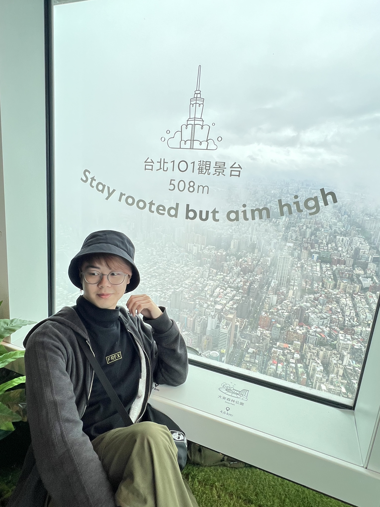
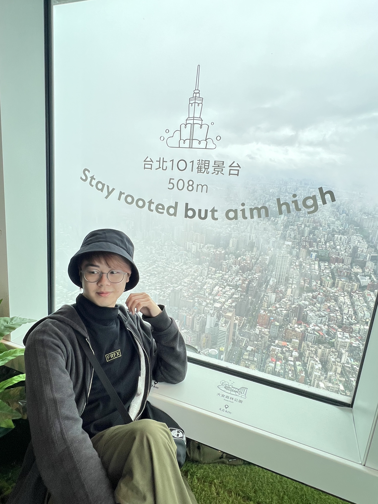

About Me
Hi there! Welcome to my personal webpage~~!
My name is Collins. I am a Year 3 student studying COMPUTER SCIENCE at the University of Macao. This webpage has everything about myself, including my profile, summary, showcase of my work and qualifications. Hope you enjoy my webpage~~
Feel free to click on the navigation bar to explore my website!
(Here are some pictures in case you wonder how I look like...)
 
